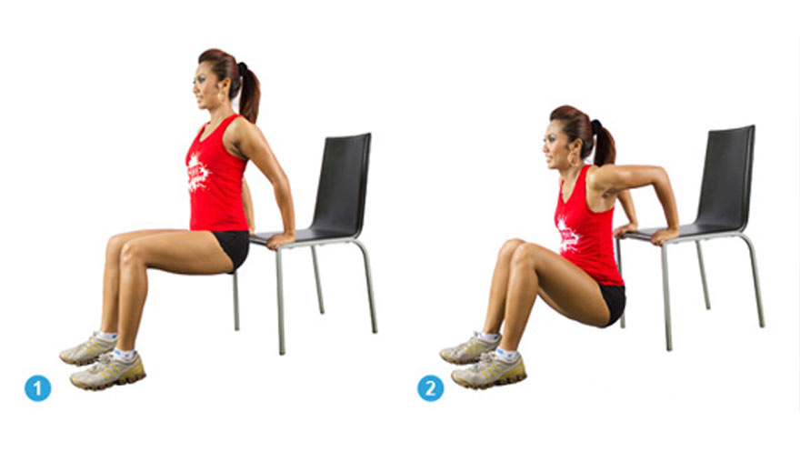

Hold onto the seat of a chair, with your feet about half a meter away from the chair. Bend your arms as you lower your hips to the ground, then straighten the arms. Perform this exercise 10–15 times (or more), rest for 30–60 seconds, and repeat up to 5 times. This exercise strengthens your triceps.
